4．级数的妙用
詹姆斯·伯努利和约翰·伯努利在级数方面做了大量工作。詹姆斯·伯努利在1689年到1704年间，写了五篇论文，他侄子尼古拉·伯努利（1695—1726）（约翰·伯努利的儿子）把它们作为詹姆斯·伯努利的《推想的艺术》（Ars Conjectandi，1713）的附录发表。这些论文中的大多数是专论使用函数的级数表示的，其目的是求函数的微分和积分，以及求曲线下的面积和曲线的长度。尽管这些应用是对微积分的重大贡献，但没有什么特别新的思想。然而，他用来求级数和的某些方法却是值得注意的，因为它们说明了18世纪数学思想的特征。
在第一篇论文（1689）中(5)，他从级数
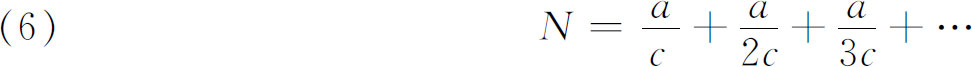
出发，由此得到
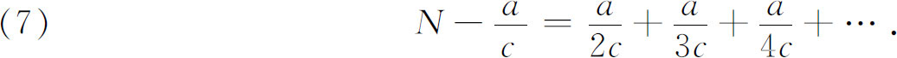
他现在从（6）减去（7），在这个过程中，（7）的右边的每一项都从位于它上面的那一项减去。这就得到
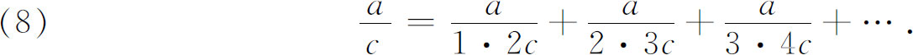
这是一个正确的结果，但推导却是错误的，因为原来的级数发散。詹姆斯·伯努利说，这种做法是有问题的，如果不慎重是不能用的。
接着他考虑通常的调和级数，并证明它的和是无穷(6)。他考虑这样的项
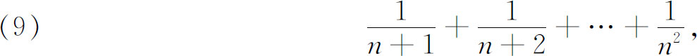
并说这个和大于
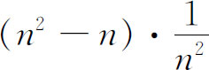
，因为这里有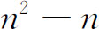
项，而每一项至少同最后一项一样大；但是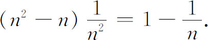
因此，如果在（9）中加上
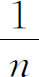
，就有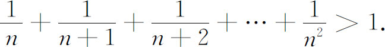
他说，这样我们可以把项一组接一组地归并起来，使得每一组的和大于1。这样一来，我们能够得到有限多个项，其和要多大就有多大，从而整个级数的和必须是无穷。由此，他还指出，“最后”一项消失的一个无穷级数，它的和可以是无穷。这是和他早期的信念，也是和18世纪包括拉格朗日在内的许多数学家的信念相矛盾的。
在这之前，约翰·伯努利曾给出过调和级数有无穷和的一个不同的“证明”。它是这样的：
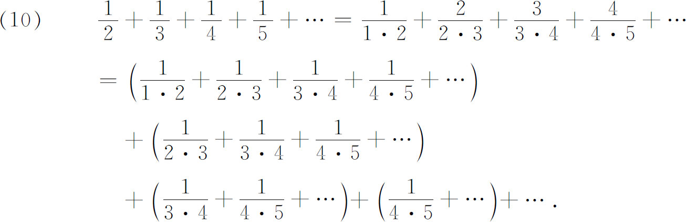
现在，应用（8），令其中的a和c为1，从（10）我们得到
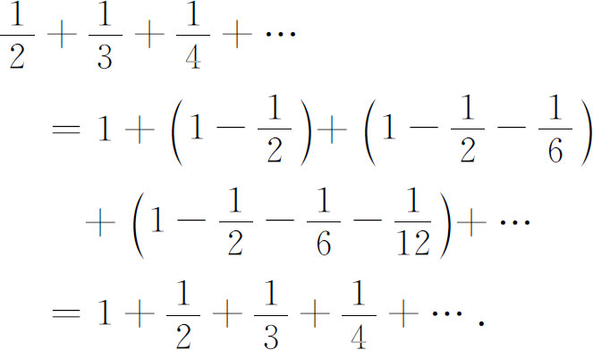
如果我们设
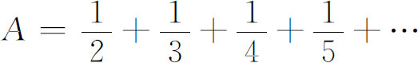
，我们就已经证明了A＝1＋A。假如A为有穷，这结果就会是不可能的。在接着的四篇论述级数的短文中，詹姆斯·伯努利如此无拘无束地做了许多事，以至使人难以相信他曾认识到必须谨慎地处理无穷级数。例如，在第二篇短文（1692）中(7)，他作了如下的讨论：从几何级数的公式我们有
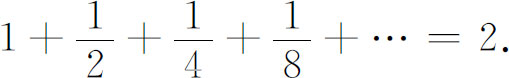
两边乘
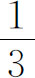
，有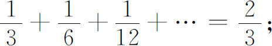
原来级数两边乘
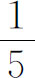
，有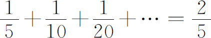
等。左边加起来就是整个调和级数，应等于右边的和，即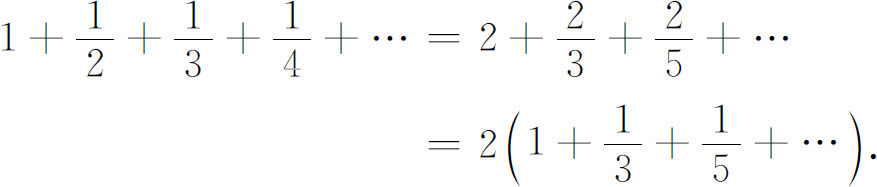
因此，奇数项的和等于调和级数和的一半，从而
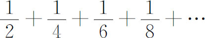
也是调和级数的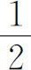
。故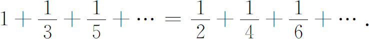
在第三篇短文（1696）中(8)，他写道
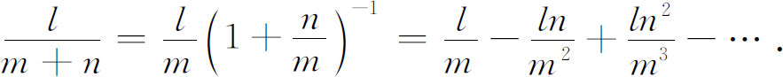
当m＝n时，
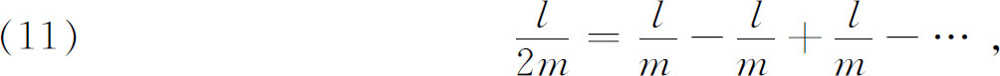
他把此式说成是一个不无风趣的悖论。
在他关于级数的第二篇文章中，他把级数的一般项用另外两项之和或差来代替，然后作另外一些可以导致特殊结果的运算。这种替换，对绝对收敛的级数是可行的，但对条件收敛的级数就不对了。因此他得到一些错误的结果，这种错误的结果他也说成是悖论。
詹姆斯·伯努利非常有趣的结果之一是处理自然数n次幂倒数的级数，即1＋
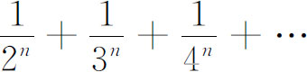
。詹姆斯·伯努利证明了奇数项的和与偶数项的和之比等于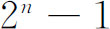
比1。这对n≥2是正确的。然而，詹姆斯·伯努利却毫不犹豫地把它用到n＝1和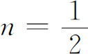
的情形。他发现最后这个结果是自相矛盾的。在级数方面詹姆斯·伯努利的另一结果是，级数
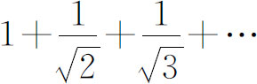
的和是无穷，因为它的每一项都大于调和级数的对应项。在这里他成功地用了比较判别法。在（11）中，当l与m为1时所产生的级数，即
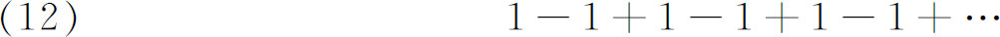
引起了极大的讨论与争议。如果把级数写成
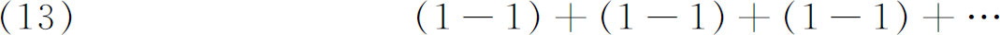
就好像很明显，它的和应该为0。可是，如果把级数写成
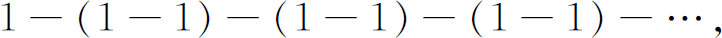
它的和也好像很明显应该是1。然而，如果我们把级数（12）的和表示为S，则S＝1-S，从而
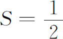
；事实上这就是（11）中詹姆斯·伯努利的结果。格朗迪（Guido Grandi，1671—1742）是比萨大学的数学教授，在他的小书《圆和双曲线的求积》（Quadratura Circuli et Hyperbolae，1703）中，用另外的方法得到了第三个结果。他在表达式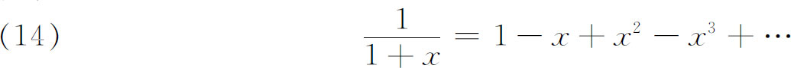
中，令x＝1，得到
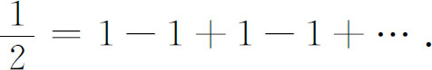
格朗迪因此主张级数（12）的和是
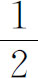
。他还表示，由于级数（12）在形式（13）下的和是0，他业已证明，世界能够从空无一物创造出来。在给沃尔夫（Christian Wolf，1678—1754）的、发表在《学报》(9)上的一封信中，莱布尼茨也研究过级数（12）。他同意格朗迪的结果，但认为不用他的论证也能得到这个结果。事实上，莱布尼茨认为，如果取级数的第一项、前两项的和、前三项的和、前四项的和等，就得到1，0，1，0，…。在这里，取1和0的可能率是相等的，因此必须取算术平均作为和，因为这个算术平均是最有可能取到的值。这个解答为詹姆斯·伯努利和约翰·伯努利、丹尼尔·伯努利以及我们将要看到的，也为拉格朗日所接受。莱布尼茨承认，在他的论证中，形而上学的成分多于数学的成分。但他接着说，在数学中，有比我们通常承认的更为形而上学的真理。然而，他受格朗迪论证的影响可能比他自己意识到的要多得多。因为，在后来的通信中，当沃尔夫希望把莱布尼茨这种可能率的论证方法推广，从而断言
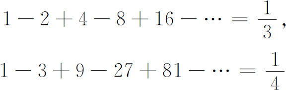
时，莱布尼茨表示异议。他指出，有和的级数要有单调下降的项，而（12）至少是带有单调下降的项的级数的极限，这一点由（14）让a从小于1的值趋向于1来看是显然的。
级数方面的真正广阔的工作是1730年左右从欧拉开始的，他对这个课题感到莫大的兴趣，但在他的思想中有很大的混乱。为了求
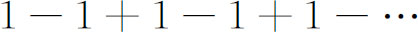
的和，欧拉主张，由于
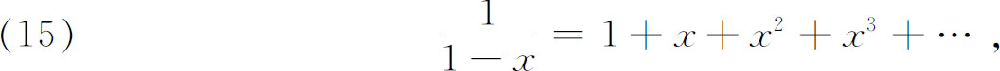
当x＝-1时，
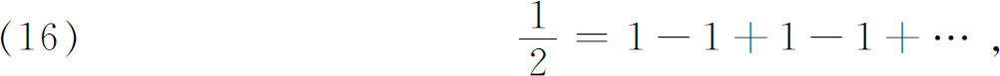
因此和是
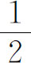
。又当
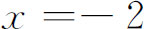
时，（15）表明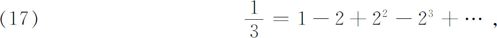
因此，右边的级数的和是
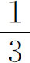
。作为第三个例子，由于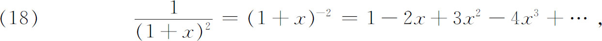
对x＝1就得到
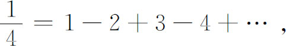
再由
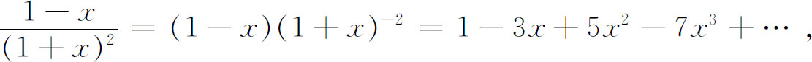
取x＝1我们就有
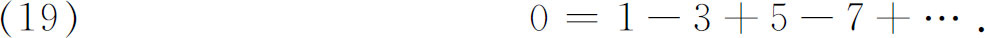
在他的著作中有大量这种推理的例子。
从（18），当x＝-1时，我们看到
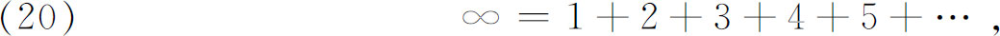
这是欧拉接受了的。进一步，在（15）中，令x＝2，我们看到
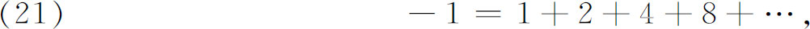
由于（21）的右边应超过（20）的右边，所以1＋2＋4＋8＋…的和应该超过∞。根据（21），它却是-1。欧拉断言，∞必须是介于正数和负数之间的一种极限，在这点上和0相似。
关于（19），尼古拉·伯努利（1687—1759）在1734年给欧拉的一封信上说，这个级数1-3＋5-7＋…的和是-∞（-1）∞。他说，欧拉的等于0的结果，是一个无法解决的矛盾。尼古拉·伯努利还注意到，在（15）中，当x＝2时，我们有
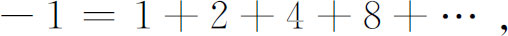
而在
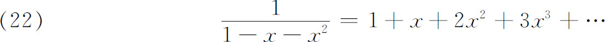
中取x＝1，得到
这两个不同的级数都给出-1这一事实，也是一个无法解决的矛盾。否则，我们就可以认为这两个级数相等。
在一篇文章中，欧拉确曾指出过，级数只有对那些使它收敛的x值才能应用。但是就在这同一篇文章(10)中，他却断言
他的论证是
和
但两式左边相加为0，而两式右边相加就是级数（23）。
在一篇较早的文章中(11)，欧拉从级数
或
出发。把代数的考虑用到（25）上，把它看成一个无穷次的多项式，并用代数方程根与系数关系的定理，欧拉证明了(12)
在同一篇文章里，他第一次给出了乘积展开
他的论据仅仅是sins有零点±π，±2π，…（他放弃了0这个根），类似于每个多项式对于每个根都必有一个一次因式一样，因此（26）成立。（在1743(13)年，以及在他的《引论》(14)中，为了回答批评，他给出了另外的推导。）他把（26）的右边看成一个多项式，令它等于零，并再次应用根与系数的关系，他导出了
以及分母是更高的偶数幂时的类似和。
在以后的一篇文章(15)中，欧拉得到了他的最优美的成果之一，即
其中是伯努利数（看后面）。这与伯努利数的联系，是欧拉稍后在他1755年的《原理》中才真正建立的(16)。在1740年的文章中，他还给出了当n是前面几个小奇数时的和，但对于所有的奇数n，他没有给出一般的表达式。
欧拉还研究过调和级数，即这样的级数，它的项的倒数构成算术级数。特别地，他表明(17)，如何能用对数函数来求原来调和级数的有限多个项的和。首先，他从
出发，于是
代入x＝1，2，3，…，n，就给出
相加，并注意到每一个对数项都是两个对数之差，就得到
或
其中C表示无穷多个有限算术和的和。欧拉近似地计算过C的值（它依赖于n，但当n很大时n的值并不怎么影响计算的结果），并得到0．577 218。这个C就是现在通称的欧拉常数，用γ表示。γ的一个更精确的表示，今天是如下得到的。从（28）的两边减去logn。而，当n→∞时它趋向于0。因此
附带说一下，对于欧拉常数，没有发现比（29）更简单的形式了，而对于π和e我们却有许多不同的表达式。不仅如此，到今天我们还不知道γ是有理数还是无理数。
欧拉在他的《论发散级数》（De Seriebus Divergentibus）(18)中研究了发散级数
形式上，这个级数满足微分方程
但这个微分方程有积分因子，因此
是一个解，还可以用洛必达法则证明它和x一起趋向于0。欧拉把级数（30）看成函数（32）的级数展开，而把（32）作为级数（30）的和。事实上，令x＝1，就得到
关于级数（30）值得注意的事实是，它可以用来作函数（32）的数值计算，因为给定一个x值，如果我们从某一项开始忽略后面的所有项，那么可以证明，余项的绝对值小于所忽略的第一项的绝对值。因此，这个级数可以用来作为积分很好的数值逼近。欧拉使用发散级数的方式显示了它的优点。这些对发散级数所取得的成就的全部意义，在后来的150年里并没有被人赏识（见第47章）。
还要指出欧拉关于级数积分的另一个有名的结果。詹姆斯·伯努利在《推想的艺术》中，在研究概率的课题时，引入了现在已用得很广的伯努利数。他找出了一个求整数的正整数次幂之和的公式，并且不加证明地给出了下面的公式：
这个级数加到n的最后一个正幂截止。是伯努利数：
詹姆斯·伯努利还给出了可以计算这些系数的递推公式。
欧拉的结果，即欧拉-麦克劳林求和公式，是一个推广(19)。设f（x）是实变量x的一个实值函数，那么（用现代的记号）这个公式就是
其中
这里n与k是正整数，是2k＋1阶伯努利多项式（它也出现在詹姆斯·伯努利的《推想的艺术》中），由下式给出：
其中，级数
对几乎所有在应用中出现的f（x）都是发散的。然而，余项Rk小于所忽略的第一项，所以级数（35）给出
的一个有用的逼近。
伯努利数Bi现在常常用后来由欧拉给出的一个关系来定义(20)，这就是
独立于欧拉、麦克劳林(21)得到同样的求和公式（35），所用的方法的确实性稍好一些，离我们今天用的方法更近一些。余项是由泊松（Simeon-Denis Poisson）首先加上去并加以认真研究的(22)。
欧拉又引进了(23)一个至今还为人们所悉知和使用的级数变换。给定一个级数，他把它写成。通过一系列形式的代数步骤，他证明了
其中Δn表示n阶有限差分（第3节）。这个变换的好处，用现代的说法就是把一个收敛级数转换成一个收敛比较快的级数。然而，对惯常并不区别级数的收敛与发散的欧拉来说，这个变换还可以把发散级数变成收敛级数。如果我们把（40）用到
（40）的右边便得到。同样，对于级数
（40）给出
自然，这些结果和欧拉以前得到的相同，以前他用的方法是把级数的和取作导出这个级数的函数的值（看［16］或［17］）。
欧拉方法的精神应该是清楚的。他是一个伟大的巧匠，他指出了一条通向数以千计的、以后可以严密建立起来的结果的途径。
必须提到另外一个著名的级数。斯特林在他的《微分法》（Methodus Differentialis）(24)中给出了一个级数，今天我们把它写成
它等价于
斯特林给出了前五个系数，并给出了一个决定后面系数的递推公式。虽然，logn！的级数是发散的，但斯特林却只用了级数的前几项，就算出了log10（1000！）等于2567加上一个准确到小数点后十位的小数。棣莫弗在1730年［《分析杂论》（Miscellanea Analytica）］给出了一个类似的公式。对很大的；这虽然是棣莫弗给出的，但却叫做斯特林逼近。